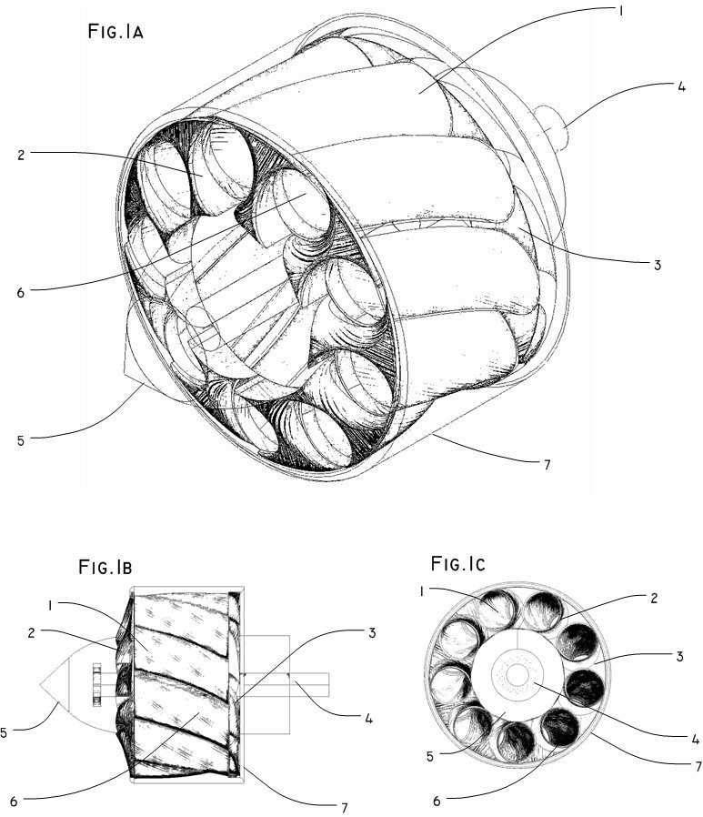

This is my current main project:
The Peripheral Tunnels Propeller
 This is an Ultra Quiet propeller I invented, Its based on my disclosure of the principle that fluid inside barrels could be accelerated with the minimal turbulence due parasite flows. This project is on PATENT PENDING. The Following is a more formal Abstract on what is, and how it works:
- Quiet Propeller Design Disclosure , which consists on a Barrel drilled with spirals Peripheral Tunnels..
- It main feature is Quiet Operation , this is achieved thanks to the minimal turbulence induced by the tunnels while accelerates/decelerates the liquid or gas, also due the high strength of the device minimize torsional flexions, avoiding noise generation due flexion or deformation and collateral fatigue damage.
Other features are:
- Allows build on exotic materials for a Propeller, as Ceramics, thermoplastic, Aluminum. Honey-Comb composite, a combination of both, much more.
- Easy mass-production with current well known techniques and modeling tools, at any size scale and any production volume.
- Inherent Safe operation , the external barrel shape, doesn’t present edges that hooks or cuts surrounding objects, animals or people, also the inners propeller intakes may be easy protected with minimal performance degradation.
- More reliable and durable , the inherent high strength and the circular shape minimizes the damage that impacting objects from surroundings could do, allowing easy survival to impacts that easy would to destroy a bladed propeller.
- Here is in more Detail a PDF that contains the Non-Provisional Patent Application at USPTO: NON-PROVISIONAL PATENT FILLING AT USPTO (Google Patents)